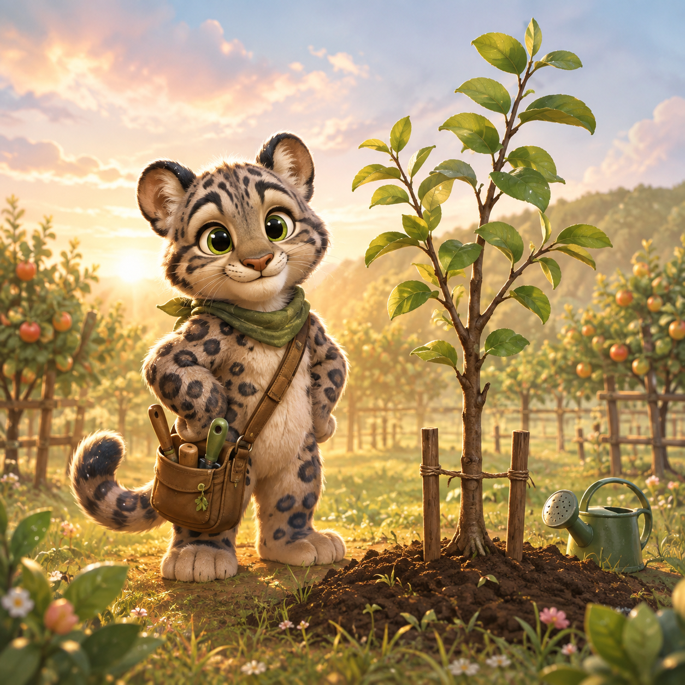
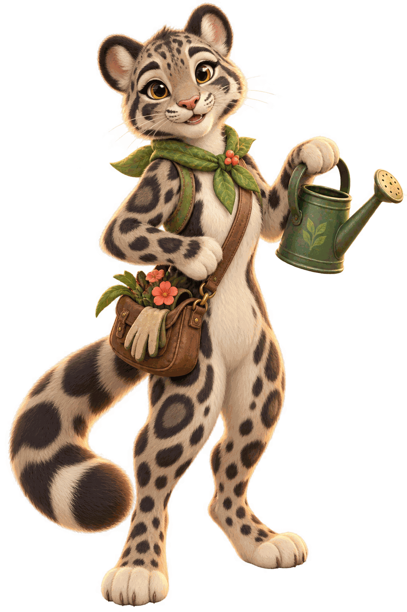

3 calm orchard days
WeightPlay Animal World
Orchard Steward
Choose one gentle care action each day to balance light, water, and soil.
PlanningBalanceFamily
Quick guide
Read the need, choose the care
Each care card shows its exact trade-off. Keep sunlight, water, and soil in their healthy bands for three days.
Orchard Steward
Day 1 / 3
Today's orchard note
Orchard resources
Leaves 0Choose one care
Exact trade-offsLeave the orchard?
This day will reset, but your best leaf count stays on this browser.

Orchard notes
A cared-for grove
Healthy days0
Best0